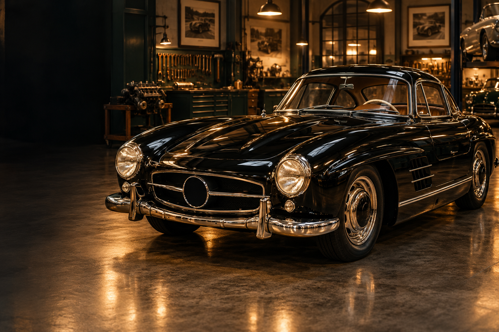
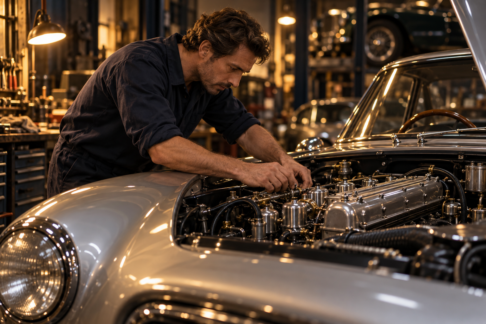
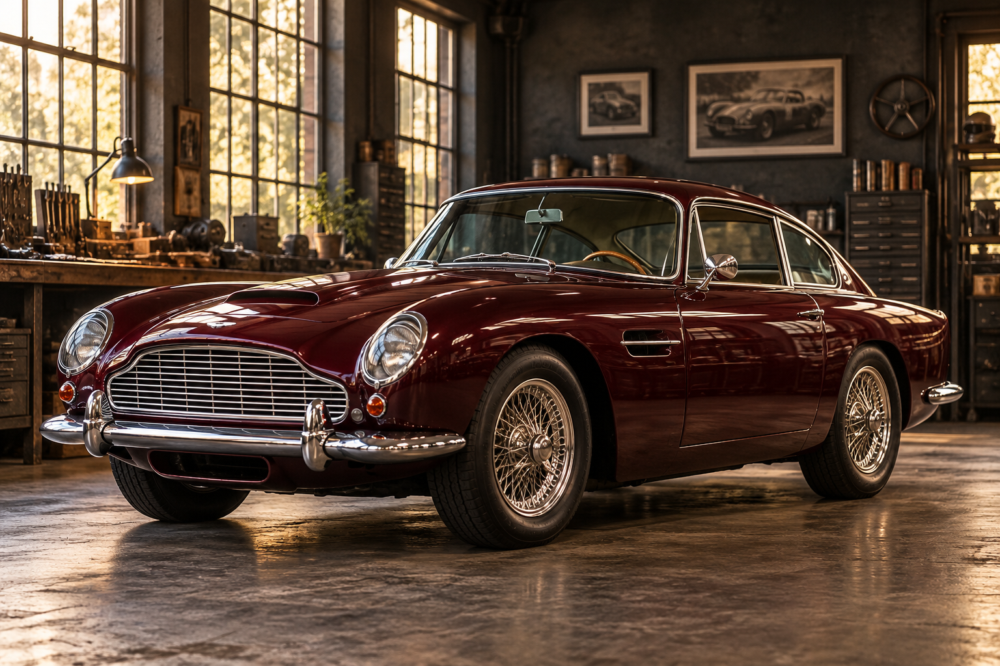
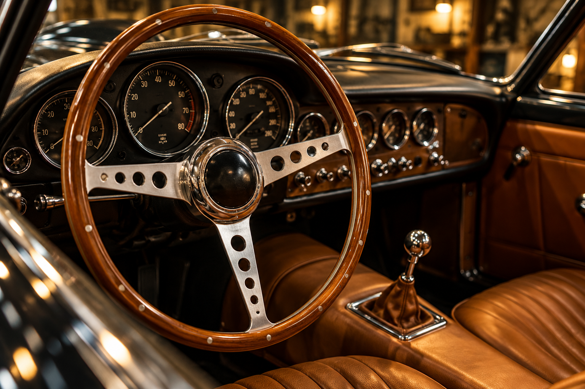

01 / TIMELESS DESIGN
Icons of an era.
Beautiful lines. Unmistakable presence.
Discuss your classic ↗
For the cars that mean more. A considered approach to restoration, combining traditional craftsmanship with a modern eye for every detail.
Care in every curve.
Purpose in every detail.
Preserving the character
that makes it a classic.
Traditional craft.
A modern perspective.
For the cars we love.
And the stories they carry.

THE ART IS IN THE DETAIL.A classic car is a collection of moments. The first drive. The unmistakable sound. The shape you’d recognise anywhere.
We believe restoration should protect that connection. Our approach brings careful planning, hands-on craftsmanship, and respect for the original together, to keep automotive stories alive for the road ahead.
Discover our approach ↗Beautiful lines. Unmistakable presence.
Discuss your classic ↗
02 / ENDURING CHARACTERPreserving the feeling behind the wheel.
Explore the possibilities ↗
03 / BEAUTY IN THE DETAILCraftsmanship you can see and feel.
Tell us your vision ↗A visual celebration of classic motoring. Images are concept photography, not a portfolio of completed customer restorations.
From a full revival to a carefully considered refinement. Start a conversation about the right approach for your classic.
Discuss your requirements →A complete journey, shaped around your car’s history and your vision.
Let’s talk restoration ↗Attention to the engineering at the heart of an unforgettable drive.
Explore the next step ↗Considered finishes that honour the lines and character of the original.
Refine every detail ↗The textures, materials, and finishing touches that make it yours.
Share your vision ↗A closer look at the work, the people,
and the passion behind every detail.
We listen to your goals and get to know your car’s unique story.
Understand the condition, the possibilities, and the work ahead.
Agree on a considered scope, priorities, and clear next steps.
Your classic’s story continues, with more memories to be made.
No two cars are the same. Neither are the people who love them.
We start by understanding what matters to you.
A shared plan, considered priorities, and open conversation.
Preserve the details that make your classic extraordinary.
Tell us the make, model, condition, and the outcome you have in mind. An initial conversation helps identify the right next step and whether an assessment is needed.
Absolutely. Describe the area you’d like to focus on in the enquiry form. Scope and suitability can be discussed before any work is agreed.
Every car is different. Timing depends on its condition, the agreed scope, and parts availability. A realistic schedule should follow an assessment.
A complete restoration, a thoughtful refinement, or simply a first conversation. Tell us what you have in mind.
THE NEXT CHAPTER STARTS HERE. ↗